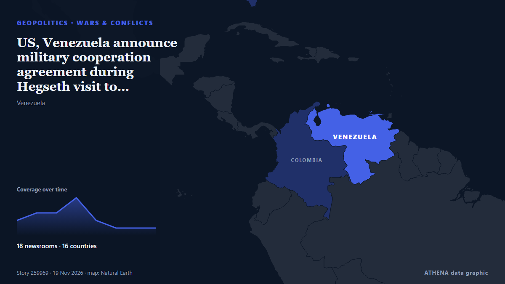

ATHENA Glaux Intelligence — Veille mondiale de l'information — chaque chiffre expliqué
Chaque titre, vérifié dans plusieurs pays.
ATHENA Glaux suit 634 médias dans le monde. Une information devient un événement vérifié seulement lorsque des médias indépendants la rapportent. Chaque événement indique qui l'a publiée en premier et un score de risque avec ses raisons.
Des articles arrivent de médias indépendants : quand deux se rejoignent sur la même histoire, un événement vérifié naît.
Comment ATHENA vérifie une information
- CollecterLes reportages arrivent de médias indépendants dans de nombreux pays.
- CroiserQuand deux médias se rejoignent sur la même information, elle devient un événement vérifié.
- ExpliquerChaque événement montre qui était le premier, jusqu'où il s'est propagé et pourquoi le risque est ce qu'il est.

GéopolitiqueUS, Venezuela announce military cooperation agreement during Hegseth visit to Caracas
Visit marks new phase in US-Venezuela relations following capture of President Nicolas Maduro by American forces. de Anadolu Agency (English)
Les titres sont affichés en anglais, tels que publiés.
Israel begins new military operation in Gaza
Israeli tanks advanced in an area of the central Gaza Strip on Wednesday, witnesses said, and the Israeli military said its forces were targeting Hamas infrastructure outside the "Yellow Line" that… de France 24 English
Anthropic reportedly prices IPO at $83 a share, above projected range
The long-awaited IPO reportedly values the company at $1.5 trillion on a fully diluted basis. de TechCrunch

Navires dans les détroits du monde en ce moment
Comptages AIS en direct. Touchez ou survolez une barre pour le détail.
Japan scrambles fighter jets after Russian aircraft breach airspace amid rising Pacific tensions
Suspected Russian aircraft entered Japanese airspace near Okinoshima, and Prime Minister Sanae Takaichi warned of instability at the Quad Leaders Summit. de Fox News (World)
Ukraine’s attack on Kerch Bridge is a major blow to Putin and Russia’s control of Crimea
The Kerch Bridge connecting Crimea and Russia is crucial for Moscow, both logistically and symbolically. de The Independent
Bangladesh needs COP31 to deliver clarity on climate finance
Bangladesh cannot bear rising climate costs alone - the UN climate summit in Antalya must show how timely, accessible finance will be delivered at the scale needed. de Climate Home News
Géopolitique, politique et sécurité
Plus ›Musk says he felt ‘pretty foolish’ about scale of midterm spending after Republican rout
Nov 18 (Reuters) - Elon Musk said on Wednesday he felt "pretty foolish" about the amount of money he spent on this year's US midterm elections after Republicans suffered sweeping losses. de Daily Maverick
- Guerres et conflits
Saudi-led coalition says it intercepted Houthi cruise missile targeting Riyadh
- Élections et politique
Spanish PM seeks election boost as Brazil's Lula visits
- Diplomatie et sommets
Xi and Putin meet at APEC summit ahead of trilateral talks with Trump
- Élections et politique
Trump’s anger with Vance is growing after VP blamed the Iran war for the Republican midterm losses: report
Économie, finance et marchés
Plus ›Pound Sterling Price News and Forecast: GBP/USD hits five-week low as UK CPI miss meets Fed hike expectations
UK inflation came in a tenth under forecast on Wednesday, and Federal Reserve (Fed) Governor Christopher Waller called for a half-point hike, so expected rates have moved against the Pound from both… de FXStreet
- Inflation et taux d'intérêt
BI assures rate hike will not derail Indonesia economic growth
- Crypto et actifs numériques
After $6.3 billion crypto heist, Binance plans Asia expansion
- Inflation et taux d'intérêt
EUR/JPY Price Forecast: Holds gains above 176.50, but downside bias prevails below 100-day SMA
- Banques et crédit
US DOE grants $2.8bn conditional loan for Wyoming grid project
Commerce, industrie et infrastructures
Plus ›APEC economies to support free trade — Shenzhen Initiative
APEC economies will promote intensive dialogue at the level customs authorities and the business community, facilitate the launch and operation of an APEC center of excellence for paperless trade… de TASS (English)
- Infrastructures critiques
Flights, banks, emails: What we know about a U.S. wave of tech outages
- Commerce et accords
China's 15th Five-Year Plan presents opportunities for growth of Asia-Pacific and beyond: Xi
- Droits de douane et contrôles
Thailand seeks lower US tariffs on forced labour and excess capacity
- Construction et infrastructures
Crimea bridge attacked again, Russian governor says
Énergie, ressources et environnement
Plus ›Albanese appears in photo with Putin but has warning for Russia
Anthony Albanese has called for an end to global conflicts ahead of talks between Donald Trump, Xi Jinping and Vladimir Putin, but insists Ukraine must have a say in its own future. de ABC News Australia
Technologie, IA et cybersécurité
Plus ›Musk accuses Ukraine’s Zelensky of lying about Starlink
The SpaceX boss said Volodymyr Zelensky asked to use commercial satellites for offensive military operations, but the company declined to do so. de Free Malaysia Today
- Intelligence artificielle
Anthropic prices blockbuster IPO at $83 a share, source says
- Puces et calcul
Even His Own Officials Don’t Think Trump’s China Trip Will Lead to Progress on AI
- Espace et satellites
NASA’s Voyager 1 reaches one light-day milestone after 50 years in space
- Intelligence artificielle
‘Human’ is Cambridge Dictionary’s word of the year
Entreprises et investissement
Plus ›General Pants Co enters voluntary administration, putting hundreds of jobs at risk
Australian fashion chain becomes latest retailer in trouble after David Jones, Cue and Veronika Maine Get our breaking news email, free app or daily news podcast Youth fashion chain General Pants Co… de The Guardian
- Fusions et acquisitions
Eurobank to Acquire 65% Stake in First Investment Bank
- Stratégie d'entreprise
Sales of gaming consoles ‘surge’ ahead of GTA VI release
- Stratégie d'entreprise
After 13-year wait, ‘Grand Theft Auto 6’ to arrive with enormous hype and expectations
- Stratégie d'entreprise
Japan's NTT looks to data center business as next profit driver
Accidents et urgences
Plus ›Trump abandons his FDA nominee, and Senate scraps vote on his NSF pick
"This time requires leadership and fortitude," Senator Bill Cassidy said. de Ars Technica
- Accidents et urgences
Bayesian crew unaware of safety risk before deadly sinking, British report finds
- Accidents et urgences
As Merger Reports Emerge, Cahill Loses Digital Infrastructure Finance Head to Latham
- Accidents et urgences
Iranian Regime Never Tires of Spreading Lies – This Time, It Was About US Military Injuries
- Accidents et urgences
Risk of nuclear accident in Ukraine increasing this winter, atomic safety regulators say
Trois façons de lire aujourd'hui
Commencez par celle qui convient à votre tempsÉvénements vérifiés
Classés selon l'ampleur de la couverture
- ‘It’s not up to me’: What Satya Nadella said about Jensen Huang’s Nvidia comeback142 médias · 46 paysRisque 4.8
- China's Xi to host historic summit with Trump, Putin71 médias · 40 paysRisque 5.9
- Risque 4.3
- Robert Pattinson’s James Bond Casting Causes Some 007 Fan Backlash94 médias · 38 paysRisque 3.1
- Lee, Putin agree to pursue cooperation where possible, work to ease tensions on Korean Peninsula70 médias · 31 paysRisque 3.9
Bureau d'analyse
Posez une question et lisez une évaluation argumentée d'un sujet majeur, avec ce qui la démentirait.
Ouvrir le Bureau d'analyse ›Aujourd'hui en chiffres
| 04:00 | 342 |
|---|---|
| 05:00 | 389 |
| 06:00 | 494 |
| 07:00 | 717 |
| 08:00 | 666 |
| 09:00 | 496 |
| 10:00 | 643 |
| 11:00 | 664 |
| 12:00 | 347 |
| 13:00 | 553 |
| 14:00 | 833 |
| 15:00 | 626 |
| 16:00 | 541 |
| 17:00 | 687 |
| 18:00 | 941 |
| 19:00 | 675 |
| 20:00 | 438 |
| 21:00 | 541 |
| 22:00 | 525 |
| 23:00 | 638 |
| 00:00 | 502 |
| 01:00 | 407 |
| 02:00 | 317 |
| 03:00 | 434 |
Risque des événements du jour
Signaux émergents
- Hausse soudaine · ActifYellow Line
- Hausse soudaine · ActifTrump and Xi
- Hausse soudaine · ActifGrand Theft Auto
- Hausse soudaine · ActifLateef Bhat
- Hausse soudaine · ActifRafael Grossi
Restez informé
ATHENA Weekly Risk Picture
Les plus grands risques géopolitiques, économiques et maritimes de la semaine, recoupés et notés.
Chaque vendredi à 8 h (heure d'Athènes) · gratuit · en anglais
S'abonner gratuitementATHENA sur Telegram
Les nouvelles dès leur publication : les événements urgents de risque 6 ou plus, un récapitulatif horaire, les mises à jour des suivis de risque et le briefing quotidien à 10 h.
Gratuit · publications en anglais · désinscription à tout moment
Rejoindre le canalL'inscription est gérée par beehiiv avec double confirmation : rien de ce que vous saisissez n'est envoyé à ATHENA, et chaque numéro contient un lien de désinscription.
Suivi des risques
Plus ›Risques mondiaux — semaine 47, 2026 (16–22 nov.) ›